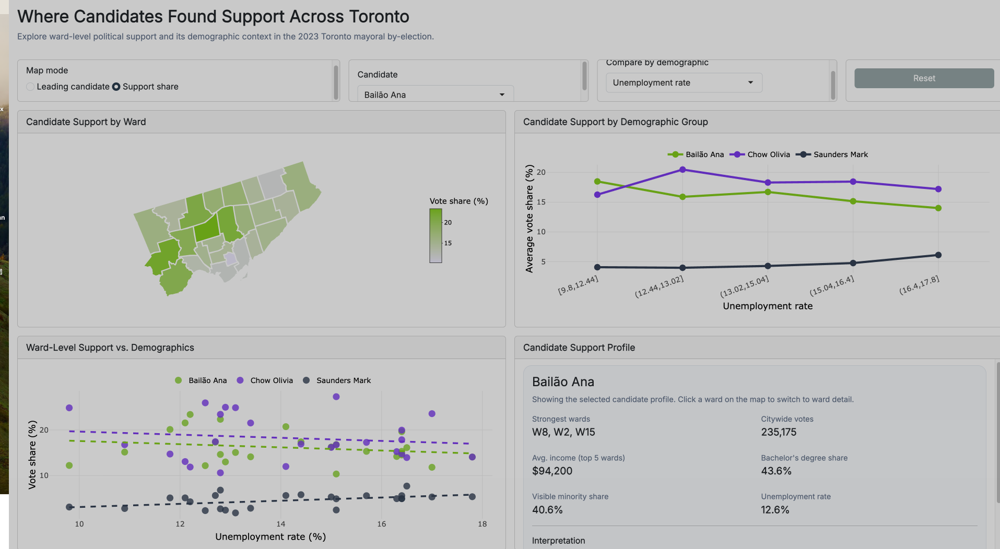

Submission Copy
Toronto Mayoral Support Dashboard
This HTML page is a static companion to the Shiny dashboard. It gives a quick overview of the project,
shows the dashboard layout, and explains how to run the interactive app locally from the same folder.
What Is Included
app.R for the interactive Shiny dashboarddata/ with the election workbooks and ward shapefilewww/ with dashboard styling and screenshot assetsscripts/install_packages.R for package installationREADME.md with setup and submission instructions
How To Run
- Open the project folder in RStudio.
- Run
source("scripts/install_packages.R") if packages are missing.
- Then run
shiny::runApp() or click Run App in app.R.
- Keep the folder structure unchanged after unzipping.
Dashboard Preview

Static screenshot of the Shiny dashboard. The full map interactions, filters, and candidate profile updates
are available when running app.R locally.